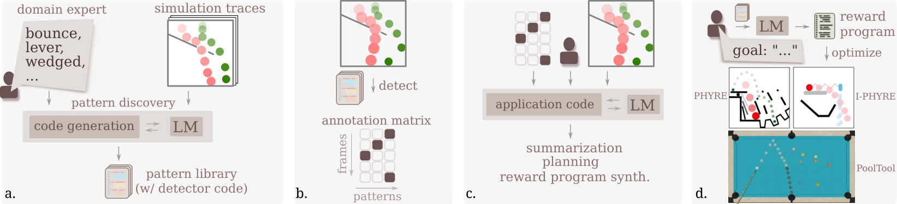
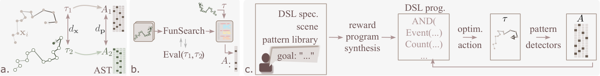
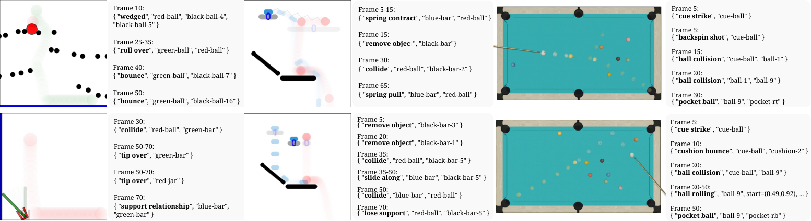
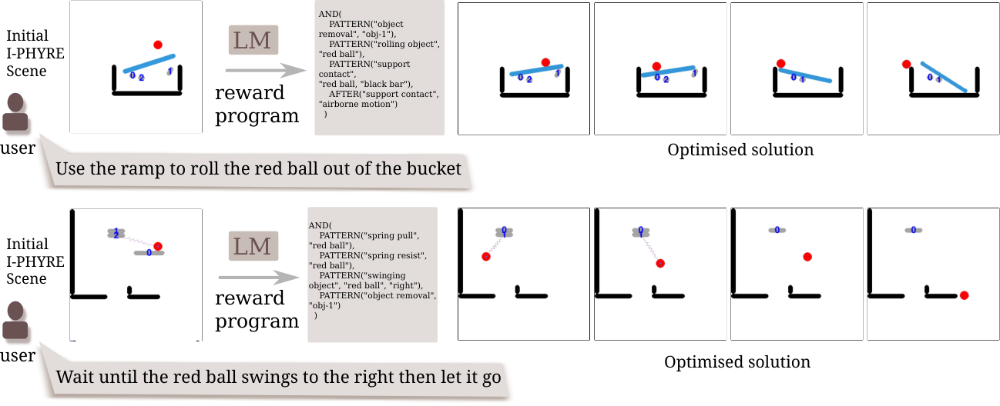
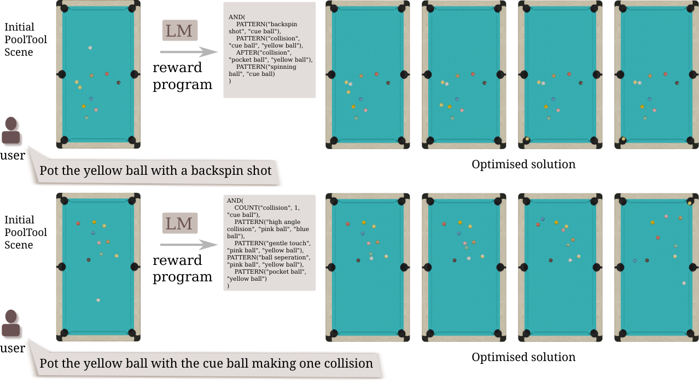
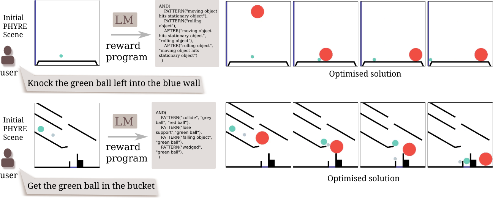
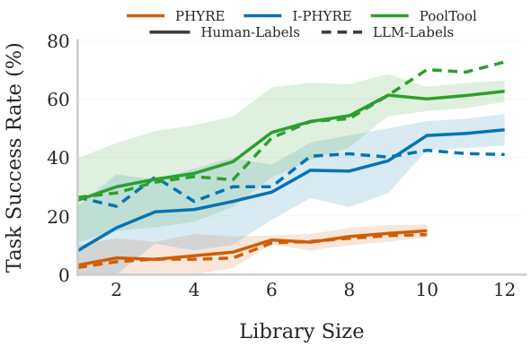
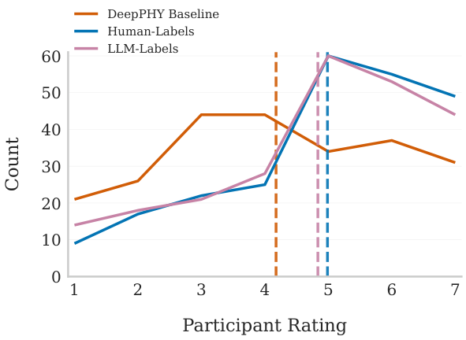
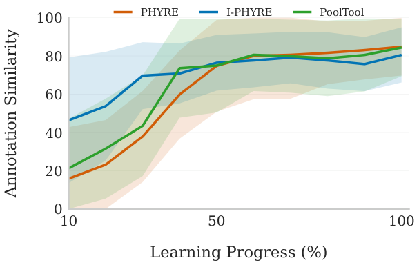

Large Language Models (LLMs) are unable to reliably reason about specific physical systems. Attempts to imbue LLMs with knowledge of the necessary physics concepts have shown great promise, but explainability and validation remain open challenges. An emerging alternative is tooling, where LLMs can query physical simulators and use the resulting simulation traces as context for validation. This approach suffers from poor scalability since simulation traces contain large volumes of fine-grained numerical and semantic data. We show that translating simulation traces to a sparse representation of `high-level' structural patterns leads to more effective interpretation by LLMs. We propose an unsupervised learning scheme to perform this translation, or annotation, via program synthesis. Our learning results in a library of programs that act as pattern detectors which can translate simulation logs to sparse, annotated pattern sequences. The detected patterns may optionally be guided by human experts via string labels (rigid collision, stretching spring, etc.). We show, using a recent physics benchmark, that such annotated representations are more amenable to natural language reasoning about specific physical systems. The synthesised programs serve as transparent, explainable functions that map system states to a sparse and efficient annotation space. As an example application, we show how goals within physical systems that are specified in natural language may be converted to reward programs which are maximised to find solutions.

Simulation traces τ are dense sequences of object states. Our central observation is that semantic simplification of those traces lets language models connect specific simulation states to prior knowledge. Given a set of text snippets describing potential patterns — supplied by a domain expert, or by an LLM — we synthesize a program per label that detects activations of that pattern in a trace.
We extend FunSearch with a custom evaluation function that scores candidate detector programs by the similarity between the annotated trace they induce and the target annotation, so the library is grown by evolutionary program synthesis without a supervisory dataset. The resulting library of detector code maps any trace τ to an Annotated Simulation Trace (AST) A — a sparse matrix of frames against patterns.
Because the detectors are ordinary, readable programs, they are transparent, explainable functions from system state to annotation space. Libraries generalize across scenes but are learned per environment. For the downstream reward-program application, a scene description, the pattern library and a domain-specific language specification are combined to synthesize a reward program from a natural-language goal, which is then optimised to produce actions.


bounce, collide, tip over, spring pull, cue strike and pocket ball.






@misc{memery2026discoveringhighlevelpatterns,
title={Discovering High Level Patterns from Simulation Traces},
author={Sean Memery and Kartic Subr},
year={2026},
eprint={2602.10009},
archivePrefix={arXiv},
primaryClass={cs.AI},
url={https://arxiv.org/abs/2602.10009},
}